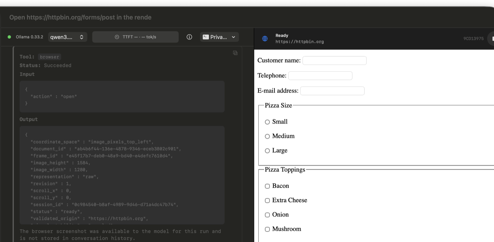

What it does
The Browser capability opens public HTTPS pages in an App-hosted WKWebView. PrivateAI captures the visible viewport, sends the bounded image to a local vision-capable model, and accepts one frame-bound action at a time. The next screenshot closes the loop before another visual action is performed.
This supports public information tasks that require JavaScript rendering, scrolling, visual layout, navigation, text entry, or buttons. The product screenshot shows a real request for current Central Park conditions and the Labor Day forecast, grounded in the official National Weather Service page visible beside the answer.
How the control loop is bounded
- Every visual action references the latest immutable screenshot frame.
- Coordinates use the returned image pixel dimensions and a top-left origin.
- Stale frames and out-of-bounds coordinates are rejected.
- Browser sessions use an ephemeral WebKit data store instead of the user's Safari profile.
- Password and file inputs require direct user interaction and are not passed as model-visible text.
- The live page and current activity remain visible in the macOS App.
Local does not mean network-free
The selected model runs through the local Ollama service. The website itself is still a public network resource, so requests and browser navigation reach that site's servers. Browser screenshots are supplied to the local model and retained locally under ~/.privateAI/logs/browser-frames for inspection.
Requirements
Browser computer use requires macOS, a running Ollama installation, and a selected local model that reports both vision and Tool-calling capabilities.